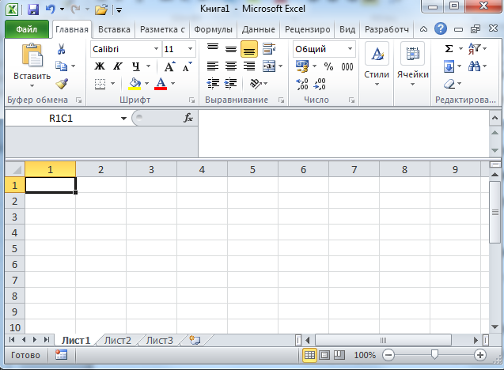

|
Хочешь узнать что такое язык структурированных запросов-SQL?SQL — это язык программирования, используемый в большинстве реляционных баз данных для запроса, обработки и определения данных, а также контроля доступа. Подробнее в уроке №1. |
Не знаешь что такое базы данных?База данных — это упорядоченный набор структурированной информации или данных, которые обычно хранятся в электронном виде в компьютерной системе. Подробнее в уроке №1. |
|  | В чем различие между базой данных и электронной таблицей?Базы данных и электронные таблицы (в частности, Microsoft Excel) предоставляют удобные способы хранения информации. Основные различия между ними заключаются в следующем: способ хранения и обработки данных, полномочия доступа к данным, объем хранения данных. |